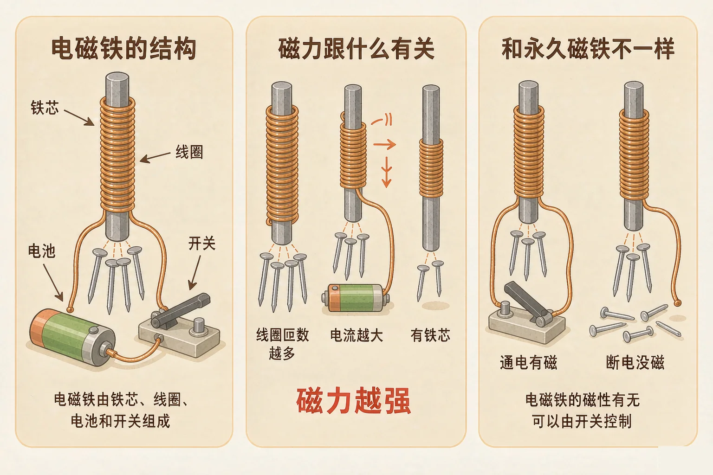
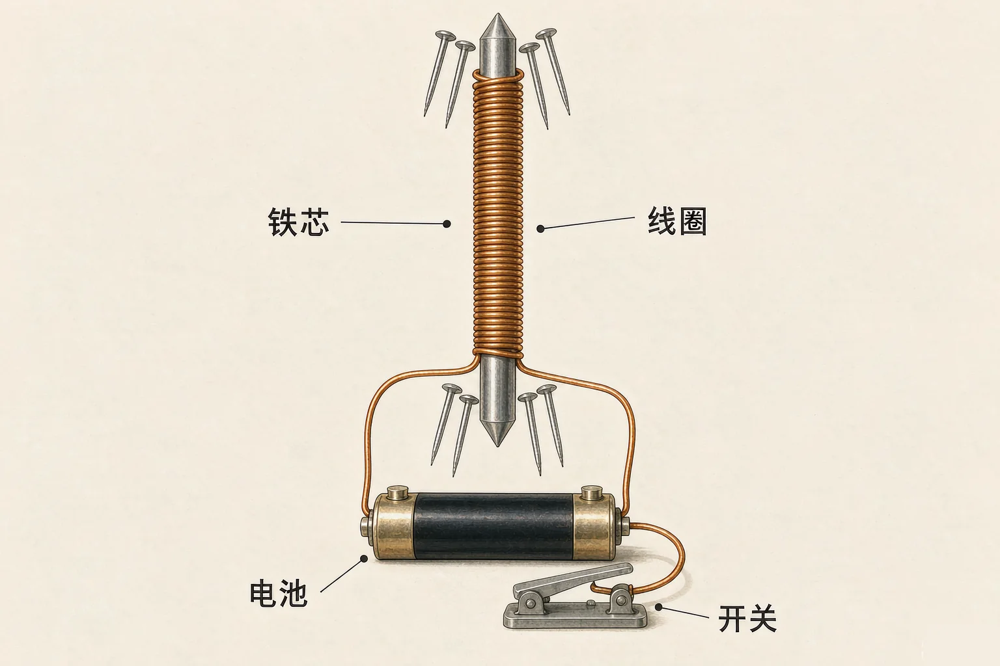
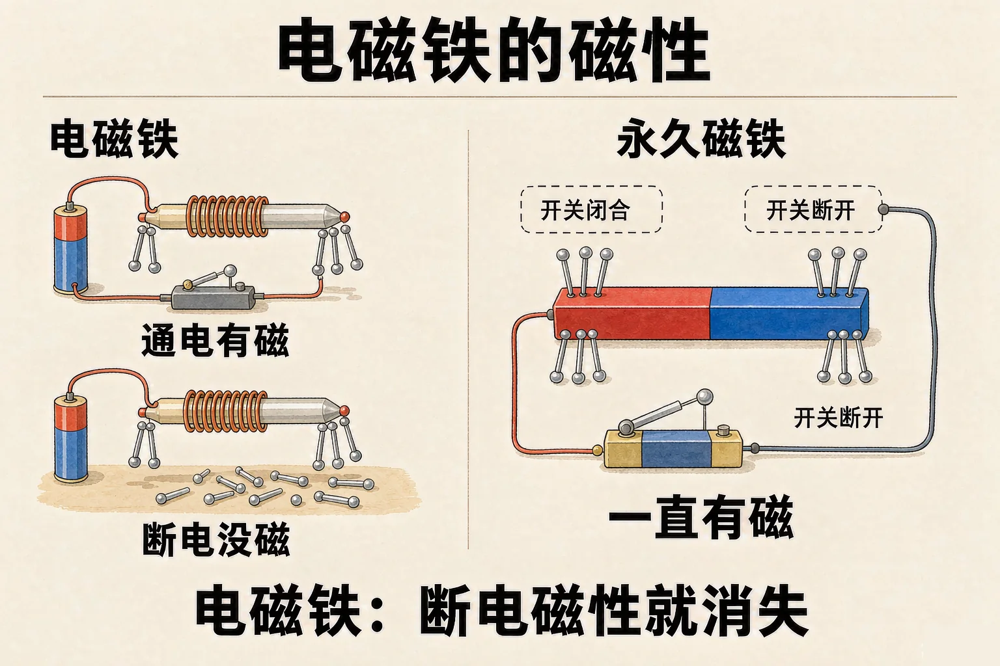

Gallery
v1.0.0 · skill v7.22.0
小学六年级 · 物质科学 · 电与磁
一根普通铁钉，接上电池就能吸大头针，一断电又马上松开——这是怎么回事？

选一个你真正好奇的问题，后面的实验都会围着它转。
选择或输入后，这节课会围绕你的问题展开。
先凭直觉选一个，选完立刻看到解释——错了也没关系，正好知道要重点听哪里。
1. 把导线绕在铁钉上接到电池，铁钉就能吸起大头针。一断开开关，大头针：
电磁铁的磁来自电流，断电就消失。错因提醒：很多同学把电磁铁和永久磁铁搞混了，误认为通电以后铁钉就永远带上磁性。其实断开的瞬间，它又变回一根普通铁钉。
2. 想让同一个电磁铁吸起更多的大头针，下面哪个做法可行？
匝数越多、电流越大，磁力越强。错因提醒：换木棒是常见错误——木棒不能被磁化，没有铁芯的电磁铁磁力会弱很多，甚至吸不起东西。
3. 做电磁铁实验时，下面哪种做法是安全的？
电磁铁实验只能用干电池这类低压电源。错因提醒：千万不要用家用插座做实验，也绝不要用导线直接连接电池的两极——那样会造成短路，电池和导线会迅速发烫，有危险。
把导线沿着同一个方向绕在铁芯上，两端接到电池，就做成了一个电磁铁。它有磁性，能把大头针吸起来。
三个组成部分
线圈（绕起来的导线）、铁芯（中间的铁棒）、电源（电池）。
一个关键要求
绕导线时方向要一致。一会儿左绕一会儿右绕，磁力会互相抵消。

🔍 深层理解 换个角度再看一遍这件事，看看能不能说出背后的原理。
看见它：电磁起重机、电铃、电动玩具里的马达，里面都藏着电磁铁。它们工作的时候，都在重复通电与断电这两个动作。
拆开它：为什么中间要放铁芯？因为铁很听话，容易被磁化。放了铁芯，同样的电流能做出更强的磁力，相当于给磁力加了个放大器。
迁移它：磁悬浮列车能在轨道上飘起来，靠的也是电磁铁：电一控制，磁力就跟着变，列车就能被精确地托起和推动。
调一调线圈匝数和电池节数，再试试抽走铁芯，看看能吸起多少枚大头针。每次只改一个条件，才能看出是谁在起作用。
同一个电磁铁，为什么有的能吸一大把大头针，有的连一枚都吸不动？因为磁力的大小跟三个条件有关。

有的同学认为只要通电，铁芯就会永远带上磁性，这是不对的。实验做完要断开开关，否则电池很快就耗光了，导线还会发热。要记住：电磁铁的磁性随电流来、随电流走。
左边是电磁铁，右边是永久磁铁。先通电，再断开，比较两边吸住的大头针数量。这个对比，就是电磁铁最大的特点。
题目：同一个电磁铁，接一节电池时吸起 6 枚大头针，换成两节电池后吸起 14 枚。请解释原因。
有的同学写成「因为两节电池的磁性更强」——这就把电池和磁铁搞混了。电池本身没有磁性，它提供的是电流，是电流让线圈产生磁性。还有同学误认为吸得更多是因为铁芯变粗了，但题目里铁芯根本没有换过。
先凭直觉选一个，选完立刻看到解释——错了也没关系，正好知道要重点听哪里。
1. 下面哪句话是正确的？
磁力由匝数、电流、铁芯三个条件共同决定。错因提醒：最常见的错误是把电磁铁和永久磁铁搞混。电磁铁断电就没有磁性，永远变不成永久磁铁。
2. 把电磁铁里的铁芯抽走，其他条件都不变，它的磁力会：
铁芯被磁化后能大幅增强磁性，抽走它就失去了这个放大器。错因提醒：有同学误认为线圈自己就够用了，其实没有铁芯的线圈磁力很弱。
3. 关于电磁铁通电时的做法，正确的是：
长时间通电会让电池耗光、导线发热，用完要及时断开。错因提醒：用家用插座做实验是极其危险的常见错误——实验一律使用干电池这类低压电源。
挑战来了：不增加电池节数，请你设计一个能吸起 8 枚大头针的电磁铁。写出三个可以调整的地方，并说明每个调整为什么管用。
第一步：写下你的三个调整
第二步：说明为什么管用
每一条理由里都要出现「磁力」这个词。比一比，哪一个调整对磁力的影响最大？
第三步：说给同桌听
用「线圈匝数、电流、铁芯」这三个词，把你的方案完整讲一遍。
先凭直觉选一个，选完立刻看到解释——错了也没关系，正好知道要重点听哪里。
1. 电磁起重机能把废铁吸起来，又能在运到地方后把废铁放下。它靠的是：
电磁起重机用通断电控制磁性，所以能吸起也能放下。错因提醒：永久磁铁的磁性关不掉，用它就没法把废铁自动放下来——这个对比正好说明了电磁铁的长处。
2. 电铃能不停地响，是因为铃里有一个电磁铁在反复地：
电铃靠电磁铁的反复通断电带动小锤敲击。错因提醒：很多同学误认为电铃里的磁铁是永久磁铁，其实正因为它能一通电一断电，小锤才会不停地敲。
3. 同一个电磁铁，把线圈从 10 匝增加到 20 匝，磁力会：
匝数增加，磁力变大。错因提醒：注意不要跟「绕线方向」搞混——匝数多少影响磁力的大小，而绕线方向一致与否影响的是磁力能不能叠加起来。
回到开头那根铁钉：通电的时候，线圈里的电流让铁芯带上了磁性，它就成了磁铁；开关一断，电流没了，磁性也立刻消失，大头针只能全部掉下来。它把电能变成了磁能。
给别人讲一遍：请用「线圈、铁芯、电流」这三个词，说清楚怎样才能让电磁铁吸起更多的大头针。
三层练习，做完第一、二层就算通关；第三层留给愿意继续探索的同学。
⭐ 基础巩固（必做）
⭐⭐ 能力应用（必做）
⭐⭐⭐ 迁移挑战（选做）
左边是学它之前要先会的，右边是学会之后可以继续探索的，下面是同一领域的伙伴知识。
图谱正在加载：首次进入需下载知识索引（约 1–3 秒），加载完成后本行会自动消失。